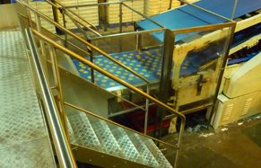
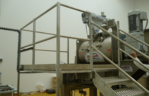
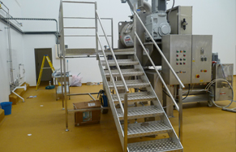
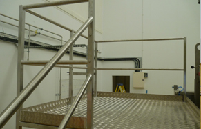

The work
What Marpet does
Marpet designs and supplies bespoke access platform fabrications for production areas.
Capability
How it is made
- Bespoke access platforms, stairs and handrails
- Design, manufacture and installation
- Stainless steel, mild steel or aluminium
- Made in the workshop or on site at your premises
- Skilled, time served tradesmen
Photographs
Examples of access platforms

Source 291px wide
Source 291px wide
Source 291px wide
Source 291px wideNeed access platforms made?
Tell us what you need made and where it is going. Marpet will come back to you.